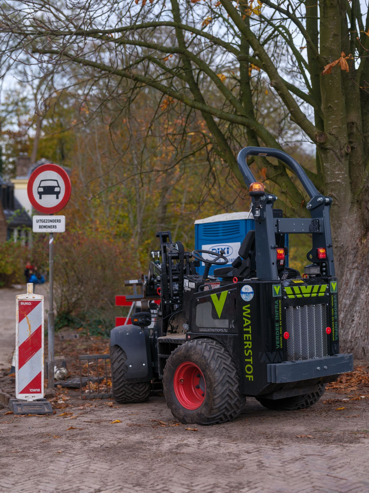

The 40-second peak
Road vehicle · Stack resizingThe brief
A vehicle OEM arrived with a finished specification and a request to design the balance-of-plant around it: a 120 kW stack for a delivery vehicle, the rating taken from the vehicle's peak power demand. The spec was neat, complete — and built on a number the vehicle touches for less than a minute a day.
The decisions
The practice declined to size anything until the duty cycle was logged. Six weeks of route data later, the peak audit read: peak demand 118 kW, sustained for about 40 seconds, on one loaded climb. The 95th-percentile demand was 54 kW; ordinary cruise sat between 22 and 38 kW.
The stack was resized to 65 kW at the 0.8 A/cm² sizing point from Table 1, and the 40-second event was handed to a battery buffer: (118 − 65) kW × 40 s ≈ 0.6 kWh of usable buffer — a small battery doing a brief job, instead of 55 kW of extra stack doing almost none, forever. Cooling was sized to the continuous load, not the headline.
The outcome
Nameplate down from 120 kW to 65 kW — 46% less stack — with cost, mass and cooling following it down. The vehicle spends its working life near an efficient point on its curve, and the efficiency figure in the client's own brochure is now one their engineers can defend line by line. The programme is in production.

| Client | Northline Vehicles — vehicle OEM |
|---|---|
| Application | Road vehicle · delivery programme |
| Scope | Duty-cycle analysis · stack resizing · BoP design |
| As specced | 120 kW stack, sized on peak |
| As built | 65 kW at 0.8 A/cm² + 0.6 kWh buffer |
| Status | In production · 2025 |
“Yusuf talked us out of half the stack we had budgeted for — and showed us the logged week that proved him right. The vehicle is cheaper, lighter, and the efficiency claim in our own brochure is now one I can defend line by line.”